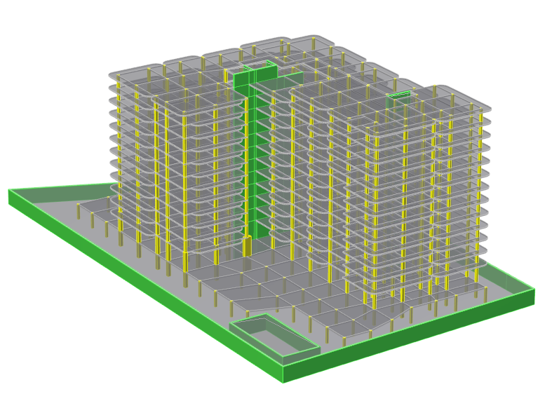

一处、两处、三处……迈阿密倒塌建筑的设计致命缺陷分析

========
声明：本分析是根据收集到的图纸和数据，结合在板柱结构设计方面的经验，对整个设计开展了初步的分析，结合中国规范，从规范对比角度提供一些思考，不作为任何事件分析的基础和依据。
1. 背景
近日，在美国佛罗里达州一栋12层板柱结构住宅楼（倒塌部分局部13层）突然发生局部连续倒塌。目前事故已造成至少9人死亡，156人下落不明。这座位于瑟夫赛德（Surfside）的住宅大厦于1981年竣工。当它倒塌时，当局正在根据城市安全法规对已有40年历史的建筑进行重新认证。
钢筋混凝土板柱结构作为一种常见的结构形式在实际工程当中得到广泛应用。由于板柱节点易发生冲切破坏，常被视为该结构体系最为薄弱且极其重要的一个环节。特别是个别节点失效引起的内力重分布，可能导致更大范围的破坏甚至引发整体结构的连续倒塌。
本次分析以事故原型的结构为基础，保持其材料等级、几何尺寸，采用中国规范进行初步复核。结构主要信息如表1所示，典型楼层高8英尺10英寸，层高约2.69m。

2. 典型节点抗冲剪承载力复核
计算分析时选取轴线8与轴线L交点对应节点（见图1）。图2给出了楼层平面布置。混凝土28天圆柱体强度标准值为3000 psi（21 MPa），板厚为8英寸（203.2 mm），板底钢筋为 #4（0.5英寸, 12.7 mm）。柱截面尺寸为14×18英寸（355.6×457.2 mm），保护层厚度取3/4英寸（19.05 mm）。

图1 典型柱网布置

图2 L-8轴典型建筑平面布置
以典型L轴交8轴节点为例，对比计算冲切荷载与规范抗冲剪承载力，本工程面层及吊顶做法均布荷载考虑四种情况（0~1kN/m2），住宅墙体均布荷载考虑四种情况（0~1.5kN/m2），在楼板强度3000 psi情况下，在附加荷载较大的情况下，不满足规范要求。楼板强度增加到4000 psi的时候，在部分荷载条件下勉强能满足美国规范要求，但基本不能满足中国规范要求。

3. 典型柱截面估算
计算分析时仍选取上面典型位置，轴线L与轴线8交界对应截面柱，此部分区域13层，采用估算方式，考虑4000psi-6000psi不同强度为分界位置。对比美国规范强度比（强度折减系数0.65）、中国规范轴压比情况。估算时暂不考虑活荷载折减系数、柱计算长度、柱钢筋等的影响，暂时不考虑柱自身重量，估算。
估算时按照附加地面做法恒载0.5kN/m2，墙体做法均布荷载1.0kN/m2。如果考虑柱自身截面重量以及风荷载等影响，预计比值会增加。可见其轴向承载力不满足规范要求。

4. 整体建模初步分析
结构整体估算时按照附加地面做法恒载0.5kN/m2，墙体做法均布荷载1.0kN/m2。布置按照获得的资料进行建模。结构分析时候按照抗震（抗震按照6度）和不抗震两种情况。风荷载基本风压1.1kN/m2，按照海边粗糙度A类计算。结构整体模型如下图所示：

图3 结构初步计算模型

图4 地下室层结构轴压比

图5 首层-三层结构轴压比

图6 地震下层间位移角

图7 风荷载作用下层间位移角
5.对设计思考
1）混凝土墙体偏少
按照国外设计理念，柱多为重力柱，抗侧力主要靠剪力墙，但从图纸中，Y向剪力墙较多，X向剪力墙很少。

图8 地上结构墙体
从初步计算结果来看，风荷载作用下和地震作用下都是X向变形较大。
倒塌顺序如下图所示，从事故进展来看，西侧G轴剪力墙（竖向长墙+水平墙），有效阻止了左侧结构的连续倒塌；东侧M轴只有竖向剪力墙，没有水平剪力墙，M轴只是暂时延缓了倒塌进展，由于侧向没有稳定支撑，最后发生了倒塌。

图9 倒塌顺序
从破坏事故现场照片看，东南角泳池部分的剪力墙有效阻止了地下室周边的连续倒塌，设计及照片如下图所示。

图10 东南角地下室泳池部分剪力墙

图11东南角地下室泳池部分剪力墙
2）混凝土柱截面偏小
从截面估算及整体初步计算来看，与中国规范对比，柱明显偏小，底部轴压比最大为1.89，右侧大部分不满足要求；与美国规范对比，节点区域抗冲切承载力待进一步复核。
3）局部屋顶
从获得的资料看，4轴位置部分走道加了连廊进行了转换，屋顶楼板直接搭到墙（墙类型是否混凝土或者砌体不确定），此部分极易引起破坏。

图12 局部屋顶走廊图
4）局部转换
为了满足车道等，结构在首层及二层进行了转换，右侧倒塌部分对应的转换如下图所示，从国内规范角度讲，这种转换需要采取更进一步措施，包括转换柱部位双向拉结等。

图13 右侧局部转换
整体事故原因待进一步调查及复核，本文不作为任何事件分析的基础和依据。
注：部分图片和视频来源于网络，主要用于学术交流，如侵删。
---End---
相关研究
专著
人工智能与机器学习
城市灾害模拟与韧性城市
高性能结构与防倒塌
新论文：抗震&防连续倒塌：一种新型构造措施
长按识别二维码，关注我们的科研动态